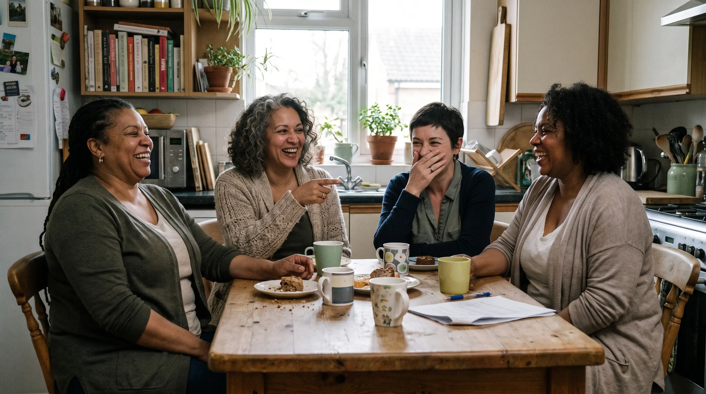

For HR
Your most experienced women are leaving. The evidence shows how to keep them.
Brain fog in the boardroom. Exhaustion behind a calm face. Menopause hits careers at the exact point where expertise peaks — and retaining that talent protects institutional knowledge, strengthens performance and claims an employer-branding advantage your competitors haven't.
What's in the HR brief
- The research on menopause and workforce retention, condensed for decision-makers
- Proof points you can present to top management
- Practical, evidence-informed policy actions — from flexible arrangements to manager training
- Employer-branding angles: how leading companies communicate support
- Regular deep dives on retaining senior female expertise and protecting IP
Our reports are educational information for informed decision-making — not medical or legal advice.
Organisation subscription
- Monthly HR brief for your people team
- Board-ready summaries included
- Optional onboarding session for your team
We'll tailor scope and pricing to your organisation's size.
Why it belongs on the People agenda
A retention and knowledge issue — not a wellbeing footnote
Expertise peaks late
Perimenopause and menopause commonly arrive just as women reach their most senior, hardest-to-replace roles. When they step back early, hard-won institutional knowledge goes with them.
The cause stays hidden
People rarely name menopause when they reduce their hours or hand in their notice. Many women describe carrying symptoms silently for years — so teams see the attrition, but never the reason behind it.
Support is a differentiator
A genuine, evidence-led stance on female health is still uncommon enough to stand out — an employer-branding advantage as much as a wellbeing one.
The quiet exit
It often starts with brain fog. It can end with a resignation letter.
Many women describe searching for a word in a meeting they used to run. Losing the thread mid-presentation. Reading the same report three times and taking none of it in.
Brain fog, exhaustion, anxiety, broken sleep — almost none of it is visible, and almost none of it gets named at work. What colleagues see is a highly capable woman who suddenly seems less sure of herself.
The symptoms usually ease with time. The confidence they erode often doesn't get the chance to recover — because by then she has stepped back, gone part-time or quietly left. It's that slow loss of professional confidence, more than any single symptom, that drives senior women out.
And it rarely arrives alone. For many women it lands on top of the busiest stretch of a career — plus teenagers, ageing parents and everything else they're holding up.
Most women would rather leave than explain. Understanding changes that.

The opportunity
Experienced women don't have to leave. They have to be understood.
This phase passes — careers shouldn't have to end because of it. When workplaces take the evidence on menopause seriously, senior women stay, thrive and keep leading. One monthly brief gives your people team the understanding to make that happen.
Request an HR briefingHow we work
From 100+ pages of studies to one ten-minute brief
Scan
Every month we monitor the major medical databases and journals for new menopause and women's health research.
Appraise
Each study is critically appraised for quality, sample size and relevance — weak evidence is labelled as such.
Distill
We translate what matters for people teams into plain language, with full references so you can always go to the source.
Act
Every brief ends with practical, evidence-informed actions — ready to take to leadership.
Why trust it
Evidence, not opinion — and no agenda
Independent
We represent no company, brand or product, and accept no pharma, supplement or device funding. Our only product is the evidence itself.
Fully referenced
Every claim traces back to its original study, so your people, legal and leadership teams can check the source directly.
Honestly graded
Strong evidence, emerging signals and speculation are labelled as what they are. We never dress up weak evidence as certainty.
Credible expertise
18+ years of medical research experience in public health, ageing and women's health behind every report.
Cost effective
Expert-level insight without the consultancy price tag — hours of professional research for the price of a lunch.
By women, for women
We've lived it and we research it. Now we're making sure the evidence reaches the people whose decisions affect women at work.
Keep the expertise you've already built
Bring the evidence on menopause and retention to your people team — in ten minutes a month.
Talk to us